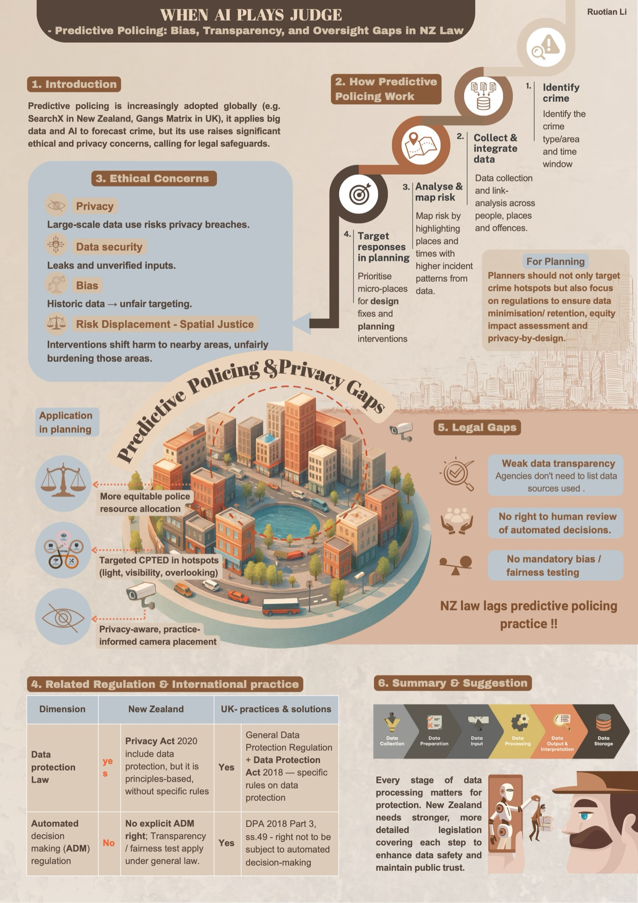
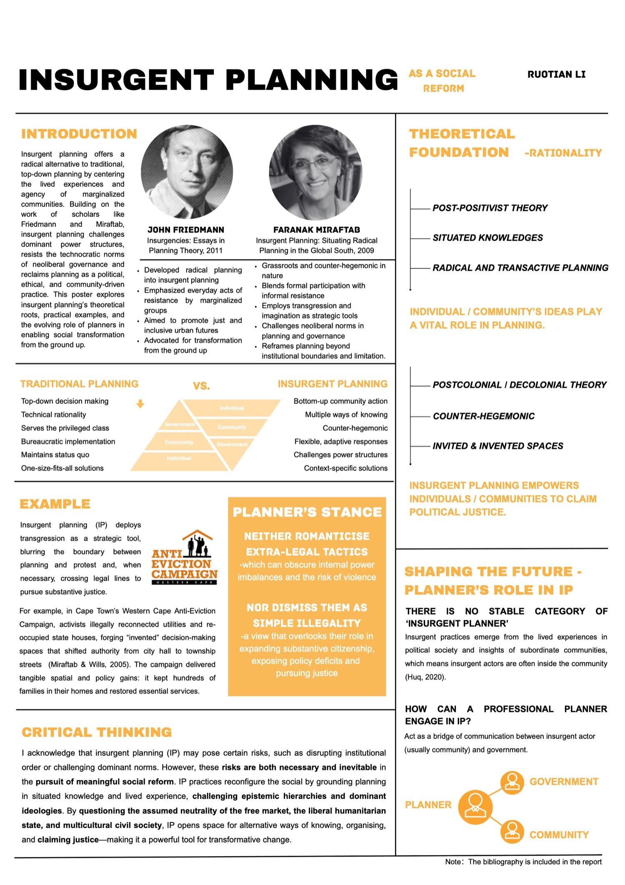

Sheet 07 · Theory and policy
Two research posters
Shorter pieces on the ethics of new technology, and on the theory of planning itself.
- Year
- 2025
- Context
- University of Auckland, courses to confirm
- Role
- Individual work
- Format
- A3 posters
01When AI plays judge
Predictive policing — bias, transparency and oversight gaps in New Zealand law. The poster explains how predictive policing works, its ethical risks (privacy, data security, bias, and the displacement of risk onto neighbouring areas), and what it means for planners, from fairer resource allocation to privacy-aware CPTED. It closes by comparing New Zealand’s Privacy Act 2020 with the UK GDPR and Data Protection Act 2018 on automated decision-making.

02Insurgent planning as social reform
An exploration of insurgent planning theory, from John Friedmann and Faranak Miraftab to the Western Cape Anti-Eviction Campaign in Cape Town — and of what it asks of professional planners: to act as a bridge between communities and the state, neither romanticising extra-legal action nor dismissing it.

Posters include portraits, logos and illustrations from third-party sources, used for academic purposes.